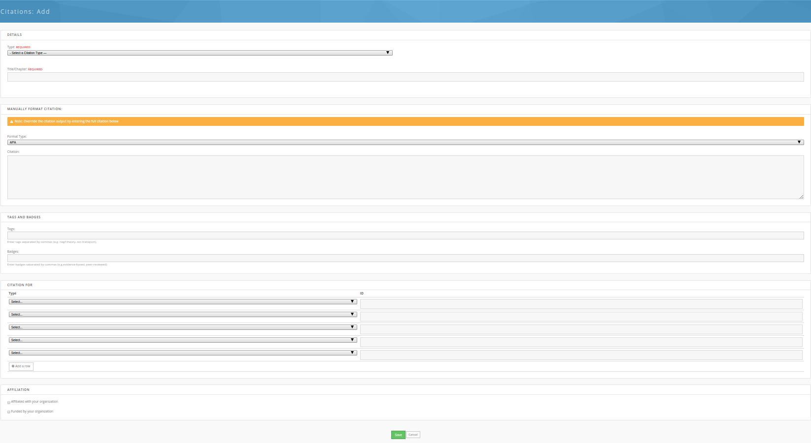

Hub users
Citations
Citations are the works — papers, books, theses, conference proceedings —
that have cited the hub or something published on it. Each one links to the
hub content it references and can be downloaded in BibTeX or EndNote
format. The catalogue is at /citations on the hub.
The citations home page
The home page answers What are citations? and Can I submit a citation?, then gives you two ways in: a Find a citation box where you type a Keyword or phrase and press Search, and a Browse the list of available citations link.
Under Metrics, two tables summarise the collection: Citations per year, split into Affiliated and Non-affiliated counts, and Citations by type, showing each type's share of the total. A citation counts as affiliated when the author of the citing work was connected to the hub's parent organization.
Depending on how the hub is set up, Submit a citation and Import Citations buttons appear in the top right.
Browsing
/citations/browse lists the hub's published citations, formatted in the
hub's chosen bibliographic style. Above the list, three tabs narrow it to
All, Affiliated, or Non-affiliated citations, and a
Search Citations box matches titles, authors, ISBN, DOI, publisher, and
abstract.
The panel on the right filters and sorts the list. Set any of them and press Filter:
| Filter | Matches |
|---|---|
| Type | One citation type, or All. |
| Tags | Hub tags attached to the citation. |
| Keywords | The citation's own keywords field. |
| Author By | Text in the author names. |
| Published In | The journal or book title. |
| Year (from) / Year (to) | The publication year. |
| Sort by | Cited By, Year, Created, Title, Author, or Journal. |
| Reference Type | Research, Education, Education/Research, Cyberinfrastructure. |
| Author Geography | US, North America, Europe, Asia. |
| Author Affiliation | University, Industry, Government. |
The Reference Type, Author Geography, and Author Affiliation boxes all start checked; unchecking some of them narrows the results, and leaving them all checked has no effect.
Each entry may be numbered, labelled with its type, or both, and may show the abstract, its tags, and its badges — the hub decides. Where the hub has turned on single citation pages, the title links to the citation's own page; otherwise it links to the cited work and BibTex and EndNote links sit under the entry.
Reading a citation
A citation's own page is at /citations/view/<id>. It shows the title, the
authors, the abstract, and the formatted citation, with
Download in BibTex format and Download in EndNote format links
below it. If the citation has a URL or e-print link, a View Article
button appears; otherwise the button is Find this Text.
Four tabs follow:
- About — every field the citation has: type, journal, publisher, book title, editors, dates, volume and issue, pages, ISBN/ISSN, DOI, series, edition, school, institution, address, notes, keywords, tags, badges, and who submitted it and when.
- Cited Resources — the hub resources this citation is associated with. The tab is hidden when there are none.
- Reviews — comments and reviews on the citation.
- Find this Text — links that help you get hold of a copy: a DOI Resolver link, advice on borrowing through your Local Library, a Google Scholar search, and other sources.
Where the hub has enabled it, the page also carries hidden COinS data, so reference managers and browser extensions can pick the citation up automatically.
Downloading citations
Every citation offers BibTex and EndNote downloads, on its own page and, where single citation pages are off, under its entry in the browse list.
To export several at once, check the box beside each citation in the browse
list, then press EndNote or BibTex under Export Multiple
Citations in the right-hand panel. The file downloads as
citations_export_<format>_<date>.bib or .enw. Only the boxes checked on
the page you are looking at are included, so export a page at a time or
raise the number of results shown before checking them.
Your hub can turn single or bulk downloads off, and can exclude particular fields from exported records.
Submitting a citation
Press Submit a citation on the citations home page, or go to
/citations/add. You have to be logged in; if you are not, the hub asks
you to sign in first. Hubs can restrict submission to administrators or
turn it off entirely, in which case the button is not shown.

- Choose a Type. The form then shows the fields that type uses.
- Fill in Title/Chapter and the other details that apply — authors, journal, year, volume, pages, DOI, abstract, and the rest. Type, Title/Chapter, and Author(s) are required.
- Add authors one at a time: start typing a member's full name or username and press Add. Names that match a hub member are linked to that member's profile; names that do not are stored as plain text.
- Optionally override the generated citation under Manually Format Citation by picking a Format Type and typing the finished citation into the Citation box.
- Where the hub allows them, add Tags and Badges, both
comma-separated. Tags are keywords, such as
negf theory, ion transport; badges are labels, such aspeer-reviewed, evidence-based. - Under Citation for, record what on the hub this work cites: choose Resource or Publication, enter the item's ID — the number in its URL — and set the Context to References this citation or Referenced by this citation.
- Tick Affiliated with your organization or Funded by your organization if either applies.
- Press Save. You are returned to the browse list, where the new citation appears straight away.
Importing citations
Press Import Citations on the citations home page, or go to
/citations/import. You have to be logged in, and the hub can limit
importing to administrators or switch it off.
The import runs in three steps.
- Upload citations file. Choose a file and press Upload. The
accepted formats are listed on the page — BibTeX (
.bib) and EndNote (.enw) — and the file must be 4 MB or smaller. A.txtfile also works if what is in it is EndNote records. - Preview imported citations. Records that look new are listed under Pending Citation(s), ready to be imported, each with a checkbox that starts ticked; untick any you do not want. Records that match something already on the hub are listed under Pending Citation(s) Requiring Attention. Click one to see the uploaded version and the version on file side by side, then choose Replace Old Version with Uploaded One, Keep Old and Import Uploaded Version, or Don't Import Uploaded Version. Press Submit Imported Citations when you are done.
- Browse uploaded citations. The hub reports how many citations were saved, skipped, or failed, and lists the new entries. From here you can Import More Citations or Browse all Citations.
Your own and your group's citations
The /citations catalogue holds the hub's own citations. You also have a
personal list on your profile, and each group has one of its own. There you
can add and import citations the same way, publish and unpublish individual
entries, edit and delete them, and choose the bibliographic format your
list is shown in — including one custom format you build from the same
placeholders the hub uses.
Entries in a personal or group list start unpublished, so only you or the group can see them; publish an entry to have it counted and shown to everyone. Deleting an entry moves it to a trashed state rather than removing it, so a hub administrator can restore it.
Rewritten and checked against 2.4-main @ 6efbbe32ed on 2026-09-09.